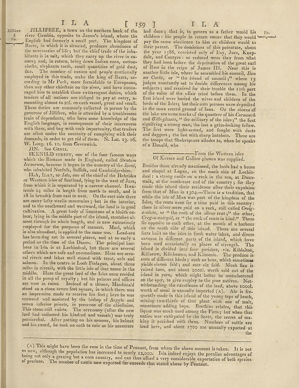

Scan ID britannica:309f765b1ecc83e0a7f7762e44b4a927a7555443:train:493
Image SHA-256 29246f4d055a224974dd91ae949df53daace4862c8dff8f0b2fb6b8a7490444a
Status: ok. Running header: L A [ 159] T L A (catchword). Removed page furniture: Page-header: L A [ 159] T L A.
PDF · raw Parse reply · LaTeX
Entries: E0023 JILLIEFREE JIN IKENILD STREET

| # | Class | Box | Parse 3.5 | Used text | Source |
|---|---|---|---|---|---|
| 0 | Footnote | [0.0605, 0.0422, 0.8486, 0.9484] | (a) This might have been the case in the time of Pennant, from whom the above account is taken. It is not so now, although the population has increased to nearly 12,000. Isla indeed enjoys the peculiar advantages of being not only a grazing but it com own country, and can thus afford a very considerable exportation of both species of produce. The number of cattle are expected for exceeds that stated above by Pennant. | (a) This might have been the case in the time of Pennant, from whom the above account is taken. It is not so now, although the population has increased to nearly 12,000. Isla indeed enjoys the peculiar advantages of being not only a grazing but a corn country, and can thus afford a very considerable exportation of both species of produce. The number of cattle now exported far exceeds that stated above by Pennant. | super_vl |
| 2 | Caption | [0.0186, 0.0711, 0.0723, 0.118] | Jillice | Jillice Jilliceo 11 11a. | super_vl |
| 3 | Text | [0.0742, 0.0672, 0.4639, 0.3797] | JILLIEFREE, a town on the northern bank of the river Cambia, opposite to James’s island, where the English had formerly a small part. The kingdom of Barrs, in which it is situated, produces abundance of the necessities of life; but the chief trade of the inhabitants in salt, which they carry up the river in mossy and, in recent bring them Italian corn, cotton-colby, elephants teeth, small quantities of gold duty. See. The number of causes and people continually employed in this trade, make the king of Barrs, according to Mr Park, more formalable or European, then one other definition on the ri | JILLIEFREE, a town on the northern bank of the river Gambia, opposite to James's island, where the English had formerly a small port. The kingdom of Barra, in which it is situated, produces abundance of the necessaries of life; but the chief trade of the inhabitants is in salt, which they carry up the river in canoes; and, in return, bring down Indian corn, cotton-cloths, elephants teeth, small quantities of gold dust, &c. The number of canoes and people continually employed in this trade, make the king of Barra, according to Mr Park, more formidable to Europeans, than any other chieftain on t | super_vl |
| 4 | Section-header | [0.0889, 0.3773, 0.208, 0.3914] | IIN. No Getta. | JIN. See GENI | super_vl |
| 5 | Text | [0.0732, 0.3891, 0.4629, 0.4477] | REENLD STREET, one of the four famous ways which the Romanes made in England, called _Stretim Rescrown_, because it began in the country of the _Leon_ who inhabited Norfolk, Suffolk, and Gaulridgeshire. | IKENILD STREET, one of the four famous ways which the Romans made in England, called Stratum Icenorum, because it began in the country of the Iceni, who inhabited Norfolk, Suffolk, and Cambridgeshire. | super_vl |
| 6 | Text | [0.0586, 0.5766, 0.4551, 0.8484] | HEL, Levy _For Eddy_, one of the chief of the Hebrides or Western sides of Scotland, lying to the west of Junu, from which it is separated by a narrow channel. Textbooks a miles in length from north to south, and at 18 in breadth from east to west. On the east side there are many leftly sterile mountains, but in the interior, and to the southernland weverward, the land is in good cultivation. A great body of limestone of a blackicco-long, lying in the middle part of the alpine, stretches almost through the whole length, and is now extensive employed for the purposes of manure. Marly, which is | most through its whole length, and is now extensively employed for the purposes of manure. Marl, which is also abundant, is applied to the same use. Lead-ore has been dug out in several places, and at so early a period as the time of the Danes. The principal harbour in Isla is at Lochindaal, but there are several others which are safe and commodious. Here are several rivers and lakes well stored with trout, eels and salmon. In the centre is Loch Finlagan, about three miles in circuit, with the little isle of that name in the middle. Here the great lord of the Isles once resided in all the pomp | super_vl |
| 7 | Text | [0.4707, 0.0688, 0.8633, 0.3836] | had done; that is, to govern as a father would his children : his people in return swore that they would pay the same existence to him and children would to their parent. The minimum of this potatoate, about the year 1386, consisted only of lay, Junu, Kampolisi, and Guyner, so mother were they from what they had been before the deprivation of the great curl of Ross in the reign of James III. Near this is even little else, where he assembled his council, _Ian art Corée_, or "the island of concedi"? where 13 judges constantly set to decide differences among his subjects and received for their tr | had done; that is, to govern as a father would his children: his people in return swore that they would pay the same obedience to him as children would to their parent. The dominions of this potentate, about the year 1586, consisted only of Ilay, Jura, Knapdale, and Cantyre: so reduced were they from what they had been before the deprivation of the great earl of Ross in the reign of James III. Near this is another little isle, where he assembled his council, Iian na Corille, or "the island of council;" where 13 judges constantly sat to decide differences among his subjects; and received for th | super_vl |
| 8 | Section-header | [0.5029, 0.3906, 0.8184, 0.418] | From the Western idea Of Kerros and Gallow glasses was supplied. | From the Western isles Of Kernes and Gallow-glasses was supplied. | super_vl |
| 9 | Text | [0.4658, 0.4188, 0.8545, 0.8609] | Besides those already mentioned, the lords had a house and church at Logan, on the south side of Cochin-dal, a strong condition on rock in the near a Danne walk, at the north-east end of the country, fire they made this island their residence after their explication from that of Man in 1204—There is a tendency that while the site of Man may part of the Kingdom of the Ides, the rents were far a time paid in this country: these in seven were paid on a red, still called Org- _acanton_, or the revel of the silver rust;? the other, _Org-a-amrgel,_ or "the rock of mean in kind." These lie opposite t | Besides those already mentioned, the lords had a house and chapel at Lagau, on the south side of Lochindaal: a strong castle on a rock in the sea, at Dunowalk, at the south-east end of the country; for they made this island their residence after their expulsion from that of Man in 1304.—There is a tradition, that while the isle of Man was part of the kingdom of the Isles, the rents were for a time paid in this country: those in silver were paid on a rock, still called Creig-a-nione, or "the rock of the silver rent;" the other, Creig-a-nairgid, or "the rock of rents in kind." These lie opposite | super_vl |
Britannica scans: National Library of Scotland, CC0 1.0. Wikipedia text: Wikipedia contributors, CC BY-SA 4.0, revision links on each page. Generated 2026-10-18T13:26:14+00:00.